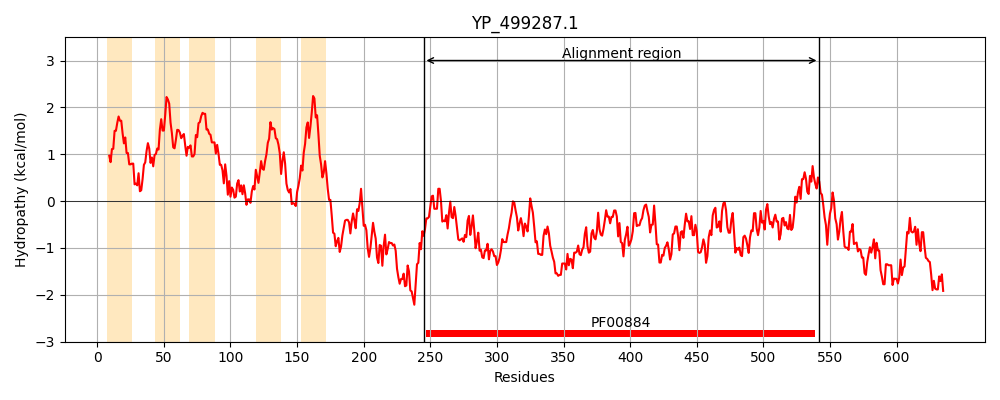
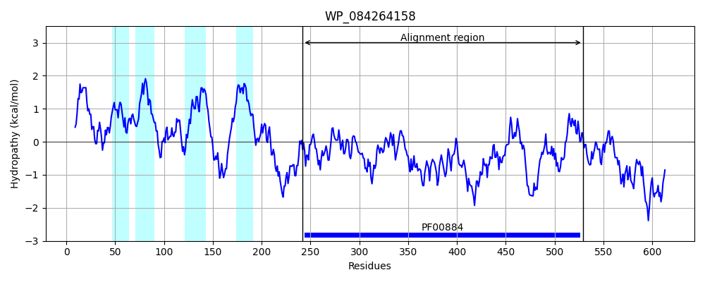
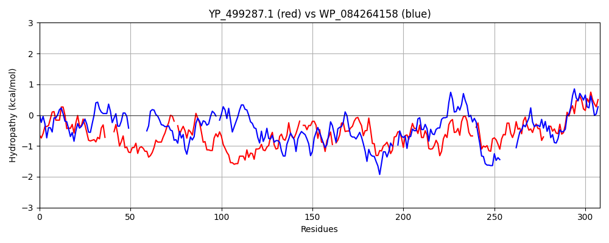

Hit Accession: WP_084264158
Hit TCID: 2.A.127.1.8
Hit Description: gnl|BL_ORD_ID|21509 gnl|TC-DB|WP_084264158.1|2.A.127.1.8 hypothetical protein [Rubrobacter radiotolerans]
Mach Len: 308
e:0.000000
Query TMS Count : 5
Hit TMS Count: 4
TMS-Overlap Score: 2.150000
Predicted Substrates:None
BLAST Alignment:
Score: 174 , Bit scores: 71 bits, E-value: 5.1e-13, Alignment length: 308, Percentage identity: 23
Query: 245 KKKNIIKIHLESFQTFLINKKVNGKEVTPFLNKLSSG----KEQFTYFPNFFHQTGQGKTSDSEFTMDNSLYGLP-QGSAFSLKGDNTYQSLPAILDQKQGYKSDVMHGDYKTFWNRDQVYKHFGIDKFYDATYYDMSDKNVVN-LGLKDKIFFKDSANYQA-KMKSPFYSHLITLTNHYPFTLDEKDATIEKSNTGDATVDGYIQTARYLDEALEEYINDLKKKGLYDNSVIMIYGDH-YGISENHNNAMEKLLGEKITPAKFTDLNRTGFWIKIPG--KSGGINNEYAGQVDVMPTILHLAGIDTK 542
+++ ++ +HLES + + G TPFL +L+ + +T P+ TS + + + ++ P + S G + L +L + +GY+S F + + ++ G ++Y D + N G +D++ + S + A + + PF +H +T T H+ + + + S D +D Y+ RY D L I KK GLY N++ +I+GDH G E+ E + + + R + PG + G A D++PT+L L G + +
Sbjct: 242 QRRGVVLVHLESTRASSVTPYNKGLGTTPFLEELAKSSLLVERAYTTVPH---------TSKASVSANCGIFPDPAREPTESYPGGLPARGLADLLGE-EGYESVFFQSSVANFDDFGGLAENLGYREYYPLESMDTAGFERPNYFGCEDEVMLRPSERWLAGRGEGPFVAHYLTGTAHHDYRPPARYGRVRFSE--DELLDRYLNCVRYQDFFLRNLIEQYKKLGLYGNALFVIFGDHGEGFGEHGRYGHEDV--------PYEEGLRIPLMVHAPGWFRRGERVPGPANLTDILPTVLDLLGYEVE 529 | Protein Hydropathy Plots: |
|---|
|  |  |
Pairwise Alignment-Hydropathy Plot:
|
|---|
|  |